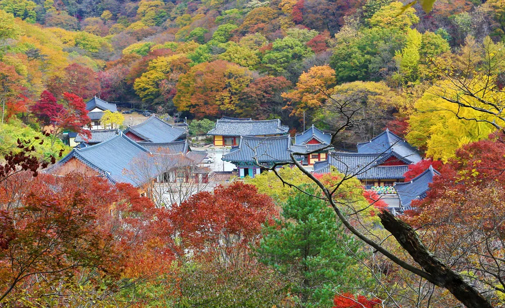
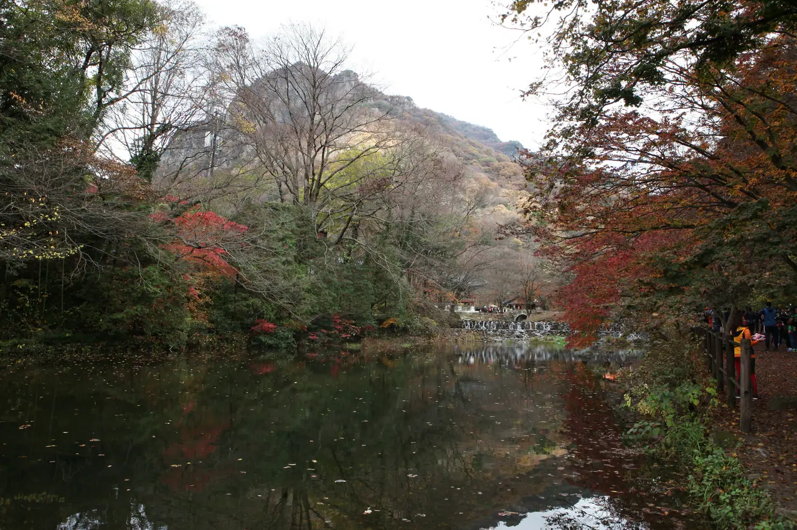

▲ 단풍 절정기의 내장산. 2026년 절정 시기는 10월 25일~11월 7일로 예상된다 ⓒ CarPrism
내장산은 단풍철이 되면 공원 안쪽으로 차를 몰고 들어갈 수 없다. 탐방객이 몰리는 기간에 내장호주차장부터 월령교까지 2.1km 구간의 차량 진입이 통제되고, 이 구간을 무료 셔틀버스가 대신 담당하기 때문이다. 매년 반복되는 규칙인데도, 내비게이션이 안내하는 대로 안쪽까지 들어가려다 되돌아 나오는 차량이 끊이지 않는다.
1. 통제 구간 — 내장호주차장에서 월령교까지 2.1km

▲ 내장산 진입로. 통제 기간에는 이 구간을 걷거나 셔틀로 이동한다 ⓒ CarPrism
통제가 시작되면 방문객은 공원 초입의 내장호주차장(제4주차장)에 차를 세우고, 그 앞에서 무료 셔틀버스로 갈아타 월령교까지 이동한다. 2.1km는 걸어서도 갈 수 있는 거리다. 실제로 단풍 터널이 이어지는 이 구간 자체가 내장산의 대표 풍경으로 꼽히기 때문에, 셔틀을 타지 않고 걷는 선택지도 충분히 매력적이다. 다만 왕복 4km를 더 걷는 셈이므로 등산 계획이 있다면 체력 배분을 고려해야 한다.
2. 통제·셔틀 일정 — 예년 패턴과 올해 확인법
| 구분 | 내용(최근 연도 기준) |
|---|---|
| 셔틀 운행 기간 | 10월 중순 ~ 11월 중순 (2024년 10월 19일~11월 17일) |
| 차량 통제 기간 | 10월 중순 ~ 11월 중순 (2025년 10월 20일~11월 16일) |
| 운행 시간(평상시) | 09:00 ~ 17:00 |
| 운행 시간(집중 시기) | 08:00 ~ 17:00 |
| 배차 | 탐방객 상황에 따라 탄력 운행 |
| 요금 | 무료 |
주의 위 날짜는 최근 연도 기준이며, 2026년 통제·셔틀 일정은 이 기사 작성 시점(9월 4일)까지 발표되지 않았다. 국립공원공단은 매년 단풍 진행 상황을 보고 9월 말~10월 초에 그해 일정을 공지해 왔다. 특정 날짜에 셔틀이 운행하지 않는 경우도 있었으므로(2024년에는 11월 11일·15일 미운행), 출발 전 국립공원공단 공지를 확인해야 한다.
운행 시간도 기간 전체가 동일하지 않다. 2024년에는 기본 09:00~17:00로 운행하되, 탐방객이 몰리는 10월 26일~11월 3일과 11월 9일·10일에만 08:00부터 앞당겨 운행했다. 즉 '집중 시기 08시 시작'은 절정 주간에만 적용되는 특례이므로, 이른 아침 셔틀을 기대하고 갔다가 한 시간을 기다리는 일이 없으려면 해당 연도 공지의 날짜 목록을 직접 확인해야 한다.
절정 시기 예상도 참고치일 뿐이다. 내장산은 우리나라 자생 단풍 11종이 모두 자라는 국립공원이라 종마다 물드는 시기가 달라, 10월 중순부터 11월 초까지 2~3주에 걸쳐 색이 바뀐다. 실제로 2025년에는 11월 10~16일이 절정으로 꼽혀 통상적인 예상보다 늦었다. 10월 25일~11월 7일이라는 구간은 평년 패턴에 기댄 값이며, 그해 기온에 따라 일주일 이상 밀릴 수 있다는 뜻이다.
내장산국립공원 공식 안내에서 통제·셔틀 일정 확인3. 주차 — 오전 10시가 분기점

▲ 내장산 진입로와 주차 구역 일대(봄철 촬영). 단풍철에는 이 주차 구역이 오전 중에 대부분 채워진다 ⓒ 한국관광공사
단풍 절정기에는 오전 10시만 넘어도 주차장이 만차가 되는 것으로 알려져 있다. 통제 구간 밖 주차장에 자리가 없으면 결국 더 먼 곳에 대고 걸어 들어와야 하므로, 절정기 방문이라면 이른 아침 도착을 목표로 잡는 편이 안전하다.
주차 요금은 시간제가 아니라 하루 한 번 내는 당일 정액제다. 여러 자료가 "4,000~5,000원"처럼 범위로 안내하는 이유는 금액이 불확실해서가 아니라, 주중과 주말·성수기 요금이 다르기 때문이다. 단풍철 주말에 가면 표의 오른쪽 금액이 적용된다고 보면 된다.
| 차종 | 주중 | 주말·성수기 |
|---|---|---|
| 경형(1,000cc 미만) | 2,000원 | 2,000원 |
| 중·소형(승용차, 35인승 이하 승합, 5톤 미만 화물) | 4,000원 | 5,000원 |
| 대형(35인승 이상, 5톤 이상 화물) | 6,000원 | 7,500원 |
국가유공자 1~3급과 정도가 심한 장애인은 100% 감면, 그 밖의 국가유공자·장애인·5·18 민주유공자·제1종 저공해차·경차·이륜차는 50% 감면 대상이다. 감면을 받으려면 출차 시 증빙을 제시해야 하므로 관련 서류나 표지를 챙겨 두는 편이 좋다.
주차장은 안쪽부터 제1·제2·제3주차장이 늘어서 있고, 공원 초입에 제4주차장인 내장호주차장이 있다. 문제는 통제 기간에는 안쪽 제1~3주차장까지 차를 몰고 갈 수 없다는 점이다. 결국 통제 기간의 선택지는 사실상 내장호주차장 하나뿐이고, 여기가 차면 그 바깥 도로변에서부터 걸어 들어와야 한다.
차를 아예 두고 오는 방법도 있다. 정읍역·정읍공용버스터미널에서 내장산 방면 시내버스(171번 계열)가 운행하므로, KTX로 정읍까지 온 뒤 버스로 갈아타면 주차 문제 자체를 건너뛸 수 있다. 대중교통으로 오는 경우에도 내장터미널 부근에서 내려 월령교까지 걸은 뒤 셔틀로 갈아타는 동선이 된다.
4. 붐빔이 부담이라면 — 같은 국립공원의 백양사지구

▲ 같은 내장산국립공원에 속한 백양사지구. 내장사 쪽이 통제와 정체로 막힐 때 대안이 된다 ⓒ 한국관광공사
내장산국립공원은 정읍 내장사지구만 있는 것이 아니다. 장성 쪽 백양사지구도 같은 국립공원에 속하고, 애기단풍으로 이름난 곳이다. 내장사 쪽의 차량 통제와 주차 경쟁이 부담스럽다면 백양사지구를 목적지로 잡는 선택지가 있다. 내장사지구의 대표 풍경인 '108단풍터널'은 약 3km에 이르는 단풍길로, 통제 구간과 그 안쪽을 걸어야 제대로 볼 수 있는 구간이라는 점도 함께 고려할 만하다.
5. 케이블카 — 걷지 않고 전망대까지

▲ 내장산의 늦가을 풍경. 케이블카를 이용하면 등산 없이 전망대까지 오를 수 있다 ⓒ 한국관광공사
체력이나 시간이 부담된다면 케이블카가 대안이다. 탐방안내소에서 연자봉 중턱 전망대까지 운행하며, 내려서 300m가량 더 걸으면 전망 지점에 닿는다. 요금은 2025년 9월 1일 자로 조정된 기준이 적용된다.
| 구분 | 대인(중학생 이상) | 소인(37개월~초등학생) |
|---|---|---|
| 왕복 | 11,000원 | 7,000원 |
| 편도 | 7,000원 | 5,000원 |
| 할인(국가유공자·복지카드 1·2급) | 왕복권만 대인 7,000원 / 소인 5,000원, 본인에 한함 | |
사전 예약이 불가능하다 내장산 케이블카는 탑승 당일 현장에서 순차 발권만 가능하다. 단풍철에는 이 줄이 길어지므로, 케이블카를 일정에 넣을 생각이라면 셔틀 이동 시간까지 더해 여유를 크게 잡아야 한다. 경로우대 할인은 적용되지 않으며, 왕복권을 사고 걸어 내려오면 환불이 되지 않으니 하산을 걸어서 할 계획이면 처음부터 편도권을 끊는 편이 낫다.
6. 하루 동선을 짠다면

▲ 내장산 우화정 일대. 통제 구간 안쪽에 있어 셔틀이나 도보로 접근하게 된다 ⓒ CarPrism
정리하면 순서는 이렇다. 이른 아침 내장호주차장 도착 → 주차 → 셔틀 또는 도보로 2.1km 이동 → 내장사·우화정 일대 단풍 관람 → 필요 시 케이블카 이용 → 다시 셔틀로 복귀. 셔틀 운행이 오후 5시에 끝나는 점을 감안하면, 하산 시각을 넉넉히 앞당겨 잡아야 걸어 나오는 상황을 피할 수 있다.
7. 정리

▲ 내장산국립공원 탐방안내소. 통제 구간 안쪽에 있어 셔틀이나 도보로만 닿을 수 있고, 케이블카 승강장도 이 부근이다 ⓒ 한국관광공사
체크포인트
- 단풍철에는 내장호주차장~월령교 2.1km 구간 차량 진입이 통제된다. 안쪽으로 들어가려 하면 되돌아 나와야 한다.
- 대체 수단인 무료 셔틀은 통제 기간에만 운행하며, 평상시 09~17시·집중 시기 08~17시로 운영된다.
- 2026년 절정 예상은 10월 25일~11월 7일이지만 2025년에는 11월 10~16일로 늦어졌다. 통제 일정도 9월 4일 현재 미발표이므로 출발 전 확인이 필요하다.
- 절정기에는 오전 10시 이후 만차가 흔하다. 이른 도착이 사실상 유일한 해법이다.
- 주차료는 시간제가 아닌 당일 정액제다. 중·소형 기준 주중 4,000원·주말 5,000원, 경형은 연중 2,000원.
- 케이블카 대인 왕복은 11,000원(편도 7,000원)이며 사전 예약이 되지 않는다. 셔틀 막차 시각을 고려해 하산 시간을 앞당겨 잡는 편이 안전하다.